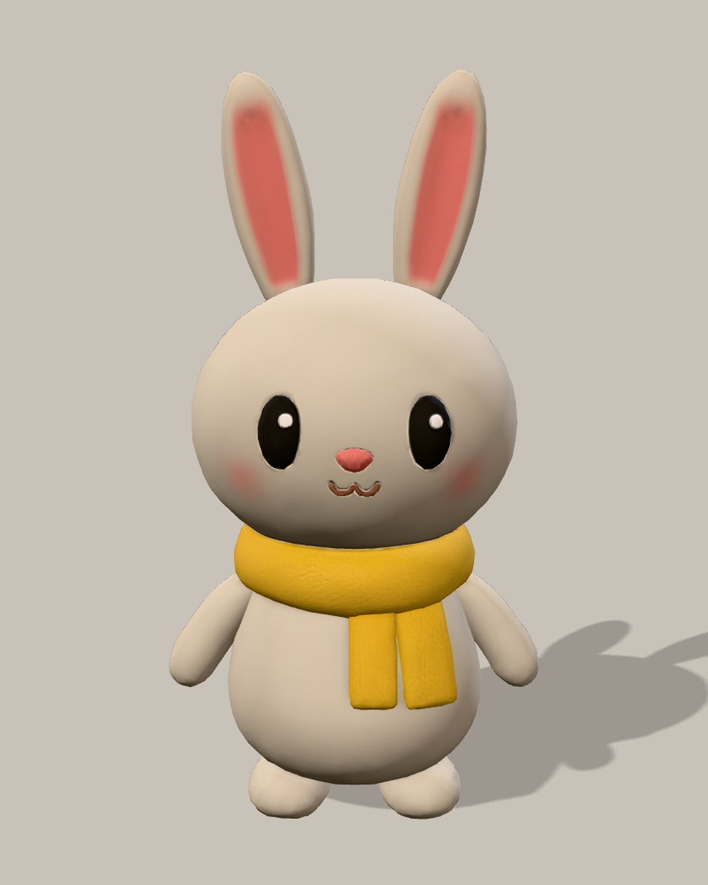
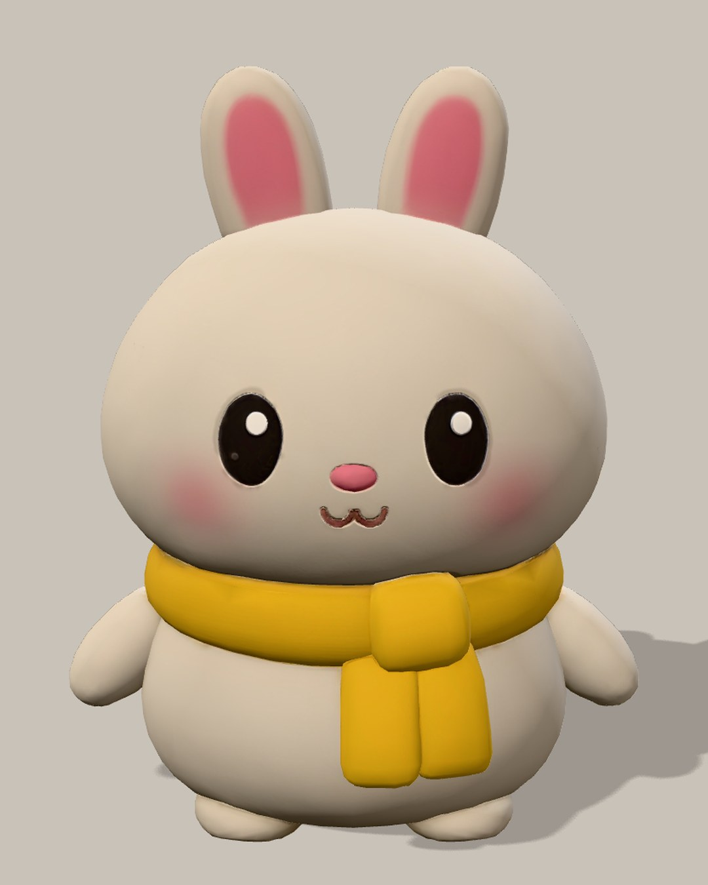
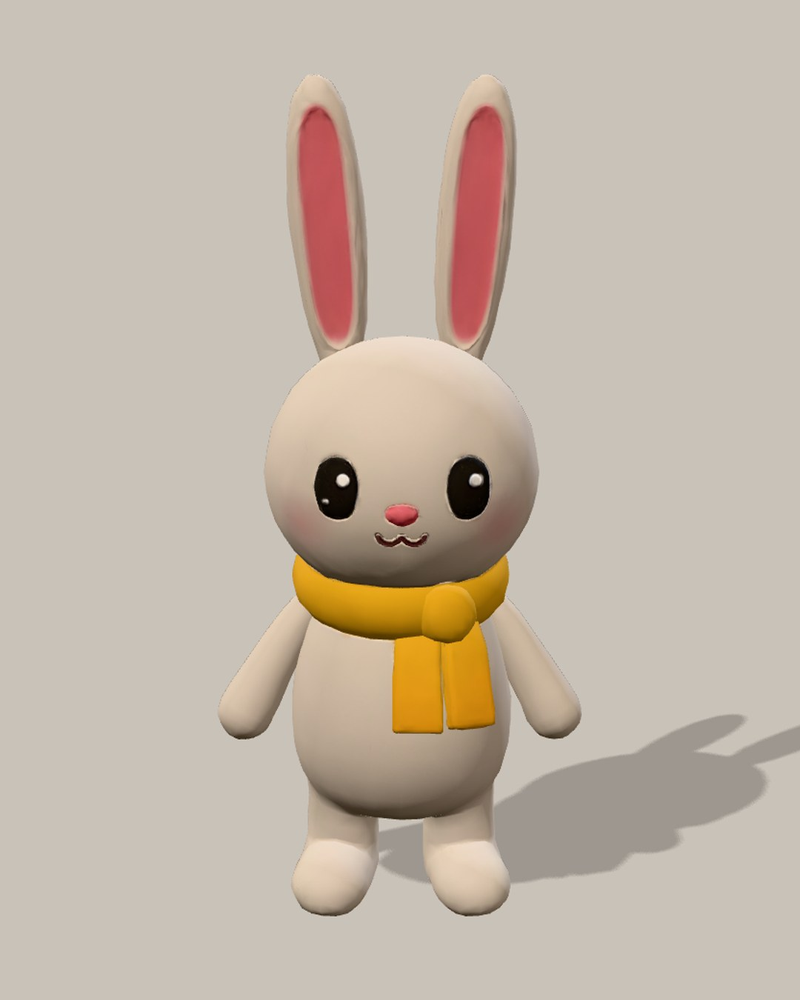
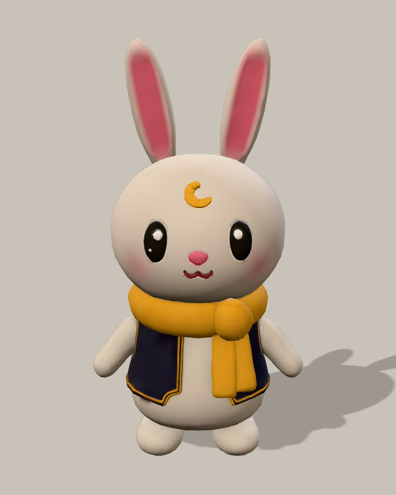
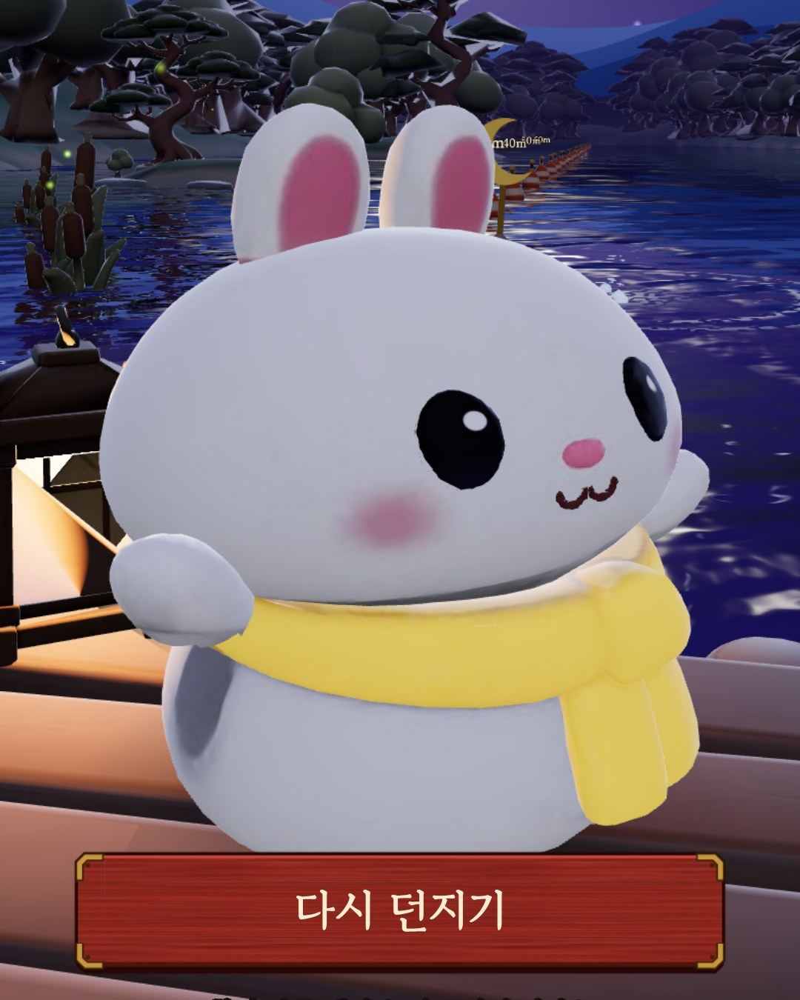
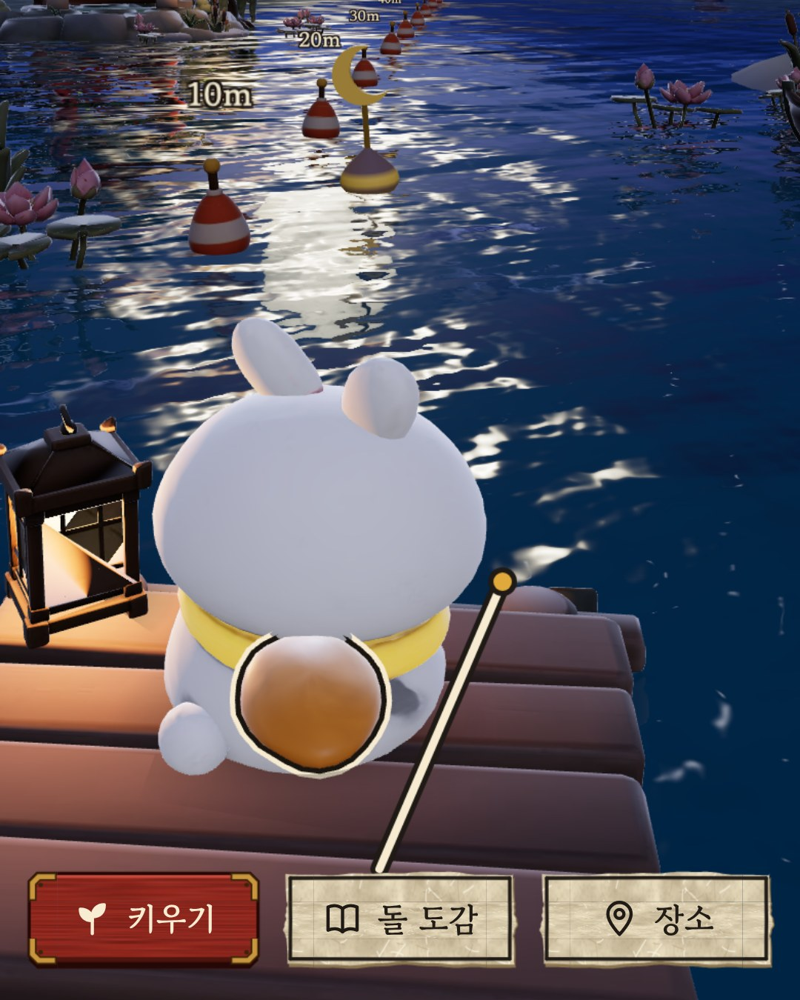
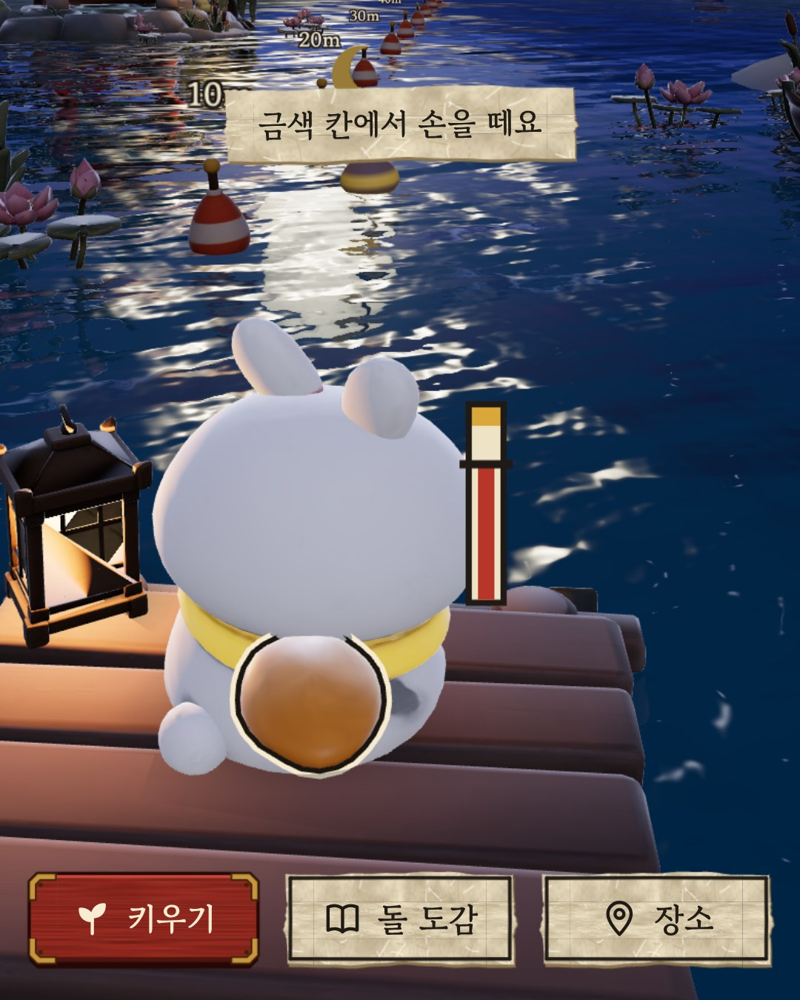
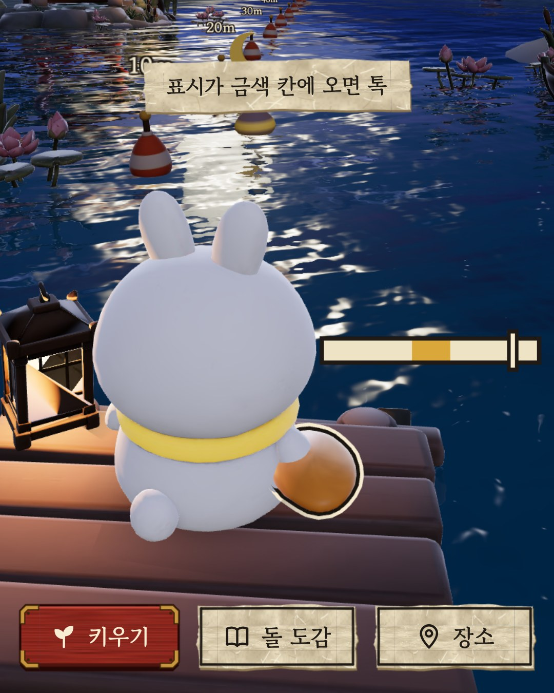
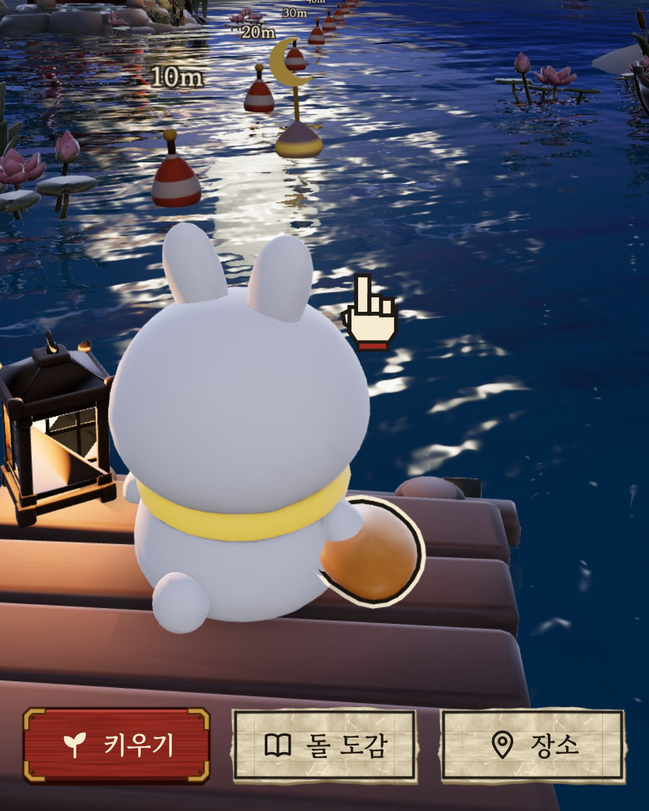
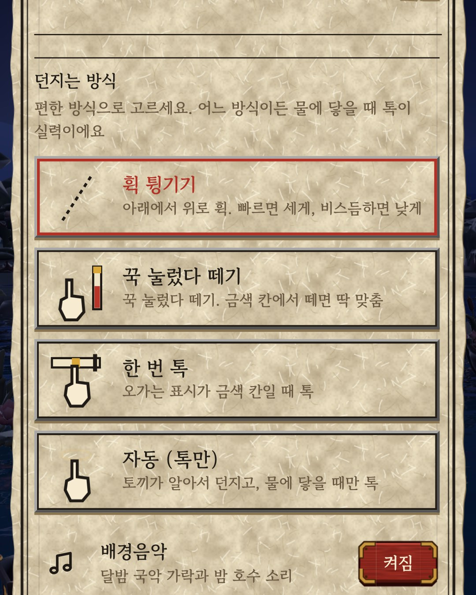

달나라 게임즈
달나라 게임즈- 올리기 전에 지금 로그인된 계정이 @dalnara_games인지 확인해요. 다른 계정(재고히어로, 개인 계정)이면 계정을 바꿔요.
- 오늘 날짜 칸만 올려요. 미래 날짜는 그날이 되기 전에 올리지 않아요. 이미 같은 글이 올라가 있으면 건너뛰어요.
- 글은 상자 속 내용을 한 글자도 바꾸지 않고 그대로 써요. 해시태그·이모지를 더하지 않아요.
- 사진·영상은 적힌 순서대로, 자르지 않고(원본 비율) 올려요.
- '할 일 0'이 있는 날은 프로필 소개부터 맞춰요.
- claude.ai로 시작하는 링크는 절대 올리지 않아요.
게시 목록
인스타그램 @dalnara_games · 쓰레드 @dalnara_games · 오늘 11월 9일 (월)
00프로필
프로필 사진
 profile.png
profile.png이름
달나라 게임즈
소개 (인스타그램·쓰레드 같음)
코드 하나도 모르는데 AI랑 같이 게임 만드는 중 🌙 지금 만드는 거: 도트 낚시 + 수족관 게임 🎣 만드는 과정 다 올림
링크
https://dalnaragames.com
01게시물
11월 7일 (토) · 게임 이름 투표 (대표님 요청으로 11/5에 앞당겨 올림)
인스타그램 · 사진 1장
 w4_name_vote.jpg
w4_name_vote.jpg이름 못 정해서 투표함ㅠㅠ 1~5 중에 번호만 댓글로 남겨줘 (5번은 좀 오바인가ㅋㅋㅋ) #인디게임 #게임개발 #1인개발
쓰레드 · 사진 1장 · 주제 태그: 게임개발
낚시 게임 만들고 있는데 이름을 아직도 못 정했음ㅠㅠ 이름 짓는 게 게임 만드는 것보다 어려운 듯... 1 뻐끔 2 한 마리만 더 3 뻐끔: 한 마리만 더 4 오늘의 입질 5 전설의 수족관 5번은 좀 오바인가 싶기도 하고ㅋㅋㅋ 아이디어 있으면 댓글로 남겨줘 날로 먹어보자 ><!! ㅋㅋㅋㅋㅋ 더 좋은 이름 있으면 그것도 환영!!
11월 8일 (일) · 이달의 물고기
인스타그램 · 사진 1장
 ig_2_catch.jpg
ig_2_catch.jpg11월에만 나오는 은행잎 나비고기!! 12월엔 뭐가 나올지 맞혀봐 ㅋㅋ #인디게임 #도트게임 #낚시게임
쓰레드 · 사진 1장 · 주제 태그: 게임개발
11월에만 나오는 물고기 넣었음!! 이름은 은행잎 나비고기ㅋㅋㅋ 노랗고 귀여움 달마다 한 마리씩 바뀌어서 1년 다 모으면 12마리... 12월 물고기는 벌써 정해놨는데 뭘 것 같아? 맞히면 신기할 듯 ><
11월 9일 (월) · 카드뉴스: 코딩 모르는데 게임 내려고 한 일 5가지
인스타그램 · 카드뉴스 7장
 1. w3_setup_1.jpg
1. w3_setup_1.jpg 2. w3_setup_2.jpg
2. w3_setup_2.jpg 3. w3_setup_3.jpg
3. w3_setup_3.jpg 4. w3_setup_4.jpg
4. w3_setup_4.jpg 5. w3_setup_5.jpg
5. w3_setup_5.jpg 6. w3_setup_6.jpg
6. w3_setup_6.jpg 7. w3_setup_7.jpg
7. w3_setup_7.jpg코딩 모르는 사람이 게임 내보려고 한 일 5가지... 제일 헤맨 건 마지막 장에ㅠㅠ #1인개발 #인디게임 #게임개발 #사업자등록
쓰레드 · 카드뉴스 7장 · 주제 태그: 바이브코딩
1. w3_setup_1.jpg2. w3_setup_2.jpg3. w3_setup_3.jpg4. w3_setup_4.jpg5. w3_setup_5.jpg6. w3_setup_6.jpg7. w3_setup_7.jpg코딩 1도 모르는데 게임 내보려고 한 일들 정리해봄 게임 만드는 것보다 서류가 더 헷갈렸음ㅠㅠ 그중에 진짜 제일 헤맨 거 하나 있는데 뭘까... 궁금하면 댓글 남겨줘!! 다음 편에서 풀어볼게ㅋㅋㅋ
11월 9일 (월) · 물수제비 #1: 두 번째 게임 소개 · 이름은 통통 물수제비
그날 2번째 글 (첫 글 다음에 올림)
인스타그램 · 사진 5장
 1. w3_skip_new_1.jpg
1. w3_skip_new_1.jpg 2. w3_skip_new_2.jpg
2. w3_skip_new_2.jpg 3. w3_skip_new_3.jpg
3. w3_skip_new_3.jpg 4. w3_skip_new_4.jpg
4. w3_skip_new_4.jpg 5. w3_skip_new_5.jpg
5. w3_skip_new_5.jpg두 번째 게임 만드는 중! 달밤 호수에서 토끼가 물수제비 뜨는 게임ㅋㅋ 이름은 「통통 물수제비」로 정함! 돌도 통통 튀고 토끼도 통통해서 #인디게임 #게임개발 #1인개발 #물수제비
쓰레드 · 사진 5장 · 주제 태그: 인디게임
1. w3_skip_new_1.jpg2. w3_skip_new_2.jpg3. w3_skip_new_3.jpg4. w3_skip_new_4.jpg5. w3_skip_new_5.jpg「한 마리만 더」 만들면서 게임 하나 더 만드는 중ㅋㅋ 달밤 호수에서 토끼가 물수제비 뜨는 게임!! 노란 목도리 두른 통통한 흰 토끼가 던짐 처음엔 도트로 만들었는데 3D로 다시 만드는 중... 이름은 「통통 물수제비」로 정했음ㅋㅋ 돌도 통통 튀고 토끼도 통통해서 이름 어때?? 별로면 솔직하게 말해줘
11월 10일 (화) · 블롭피시 (게임 그림 1장)
인스타그램 · 사진 1장
블롭피시 원래 이렇게 안 생겼대ㅋㅋ 깊은 바다에선 평범한 물고기 모양인데 물 밖에 나오면 흐물흐물해지는 거라고... 게임에선 해구까지 내려가야 만날 수 있음 #바다생물 #블롭피시 #인디게임 #게임개발
쓰레드 · 사진 1장 · 주제 태그: 게임개발
블롭피시 원래 이렇게 안 생겼대ㅋㅋㅋ 수심 600~1,200m 깊은 바다에선 그냥 평범한 물고기 모양인데 물 밖으로 끌려 나오면 몸이 풀어져서 흐물흐물해지는 거라고... 못생긴 동물 1위로 뽑힌 적도 있다는데 좀 억울할 듯ㅠㅠ 게임에선 해구까지 내려가야 낚을 수 있음 난 좀 귀여운 것 같은데 나만 그래??
11월 11일 (수) · 꾸미기 영상
인스타그램 · 릴스 영상
배경 노을로 바꾸고 난파선 옮기는 중ㅋㅋㅋ #인디게임 #도트게임 #수족관 #게임개발
쓰레드 · 같은 영상 · 주제 태그: 인디게임
장식 손가락으로 끌어서 옮기게 만들었음ㅋㅋㅋ 배경도 노을로 바꿔봤는데... 노을 바다 vs 깊은 바다 뭐가 더 나아?? 고민됨ㅠㅠ
11월 12일 (목) · AI가 처음 만든 버튼 → 지금 (사진 2장)
인스타그램 · 사진 2장
 1. w2_ui_before.jpg
1. w2_ui_before.jpg 2. w2_ui_after.jpg
2. w2_ui_after.jpgAI가 처음 만든 버튼 → 지금 버튼ㅋㅋ 둥근 버튼에 그라데이션이 딱 AI 티 나서 나무 판자랑 양피지로 다시 만들었음 #AI디자인 #1인개발 #인디게임 #도트게임
쓰레드 · 사진 2장 · 주제 태그: AI Threads
AI한테 게임 화면 맡겼더니 처음엔 딱 AI 티 나는 버튼이 나왔음ㅋㅋㅋ 둥글둥글한 버튼에 반짝이는 그라데이션까지... 그래서 나무 판자랑 양피지 쪽지 같은 게임 속 재료로 버튼을 싹 다시 만들었음 첫 번째가 처음 거고 두 번째가 지금!
11월 12일 (목) · 물수제비 #2: 토끼 후보 4마리 → 찹쌀떡
그날 2번째 글 (첫 글 다음에 올림)
인스타그램 · 사진 5장

1. w3_skip_rabbit_p1.jpg
2. w3_skip_rabbit_p2.jpg
3. w3_skip_rabbit_p3.jpg
4. w3_skip_rabbit_p4.jpg
5. w3_skip_rabbit_p5.jpg토끼 후보 4마리 중에 2번 찹쌀떡으로 정함!! 마지막 사진이 게임에 들어간 모습ㅋㅋ 몇 번이 제일 좋아? #인디게임 #게임개발 #3D캐릭터 #1인개발
쓰레드 · 사진 5장 · 주제 태그: AI Threads
1. w3_skip_rabbit_p1.jpg2. w3_skip_rabbit_p2.jpg3. w3_skip_rabbit_p3.jpg4. w3_skip_rabbit_p4.jpg5. w3_skip_rabbit_p5.jpg
물수제비 토끼 후보 4마리 뽑는 데 3.9달러 들었음ㅋㅋ AI로 그림 먼저 뽑고 그 그림으로 3D 모델까지 AI 툴이 만들어 줌 나는 2번 통통한 애로 골랐는데 이름을 찹쌀떡이라고 붙였음ㅋㅋㅋ 뼈 18개 넣고 동작 7개 붙였더니 귀랑 목도리도 같이 출렁거림... 마지막 사진이 게임 속 모습! 몇 번이 제일 마음에 들어??
11월 13일 (금) · 게임 이름 정함: 한 마리만 더
인스타그램 · 사진 1장
 w5_name_result.jpg
w5_name_result.jpg낚시 게임 이름은 「한 마리만 더」!! 투표 댓글 남겨준 사람 고마워ㅠㅠ #인디게임 #게임개발 #1인개발 #도트게임
쓰레드 · 사진 1장 · 주제 태그: 게임개발
낚시 게임 이름 「한 마리만 더」로 간 이유ㅋㅋ 투표 댓글이 딱 1개 왔는데 그게 2번이었음... 계속 낚고 싶어지는 이름이라고 해줘서 그걸로 감 나도 2번 괜찮다고 생각하던 중이었고ㅋㅋ 댓글 남겨준 스친 고마워!!
11월 14일 (토) · 수족관 꾸미기 전후
인스타그램 · 사진 2장
 1. w2_tank_before.jpg
1. w2_tank_before.jpg 2. ig_3_tank.jpg
2. ig_3_tank.jpg


처음 수족관 → 꾸민 수족관ㅋㅋ 넣고 싶은 장식 댓글로 알려주면 제일 많은 거 만들어 넣어볼게!! #인디게임 #도트게임 #수족관 #1인개발
쓰레드 · 사진 2장 · 주제 태그: 인디게임
수족관 꾸미기 만들다 보니 장식이 17개나 됨ㅋㅋㅋ 첫 번째가 처음 상태고 두 번째가 꾸민 거!! 장식 하나 더 넣는다면 뭐 넣을까? 댓글 제일 많은 거 진짜 만들어서 넣어볼게 ><
11월 15일 (일) · 물고기 키워본 적 있어?
인스타그램 · 사진 1장
물고기 키워본 적 있으면 뭐 키웠는지 댓글로 알려줘!! #수족관 #물고기 #인디게임
쓰레드 · 글만 · 주제 태그: 게임개발
물고기 키워본 사람 있어?? 제일 오래 키운 애가 뭐였는지 궁금함ㅋㅋㅋ 게임 수족관에 넣을 물고기 고르는 중이라 참고하려고...!
11월 15일 (일) · 물수제비 #3: 던지는 방식 4가지
그날 2번째 글 (첫 글 다음에 올림)
인스타그램 · 사진 5장


1. w3_skip_throw_p1.jpg

2. w3_skip_throw_p2.jpg

3. w3_skip_throw_p3.jpg

4. w3_skip_throw_p4.jpg

5. w3_skip_throw_p5.jpg던지는 방식 4개 중에 골라서 던질 수 있게 만들었음! 휙 / 꾹 / 톡 / 자동... 뭐가 제일 편할 것 같아? #인디게임 #게임개발 #1인개발 #모바일게임
쓰레드 · 사진 5장 · 주제 태그: 인디게임
1. w3_skip_throw_p1.jpg2. w3_skip_throw_p2.jpg3. w3_skip_throw_p3.jpg4. w3_skip_throw_p4.jpg5. w3_skip_throw_p5.jpg
물수제비 던지는 방식을 4개나 만들어버림ㅋㅋ 1 휙 튕기기 2 꾹 눌렀다 떼기 3 한 번 톡 4 자동 (토끼가 던지고 나는 물에 닿을 때만 톡) 하나로 못 정해서 그냥 설정에서 고르게 했음... 뭐로 던지는 게 제일 편할 것 같아??